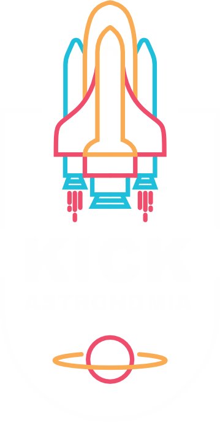

Kick Astronomia
Seu Site do espaço
Os buracos negros estão entre os objetos cósmicos mais misteriosos, muito estudados, mas não totalmente compreendidos. Esses objetos não são realmente buracos. São enormes concentrações de matéria compactadas em espaços muito pequenos. Um buraco negro é tão denso que a gravidade logo abaixo da sua superfície, o horizonte de eventos, é suficientemente forte para que nada – nem mesmo a luz – possa escapar.
Há muito que não sabemos sobre os buracos negros, como a aparência da matéria dentro de seus horizontes de eventos. No entanto, há muito que os cientistas sabem sobre buracos negros.